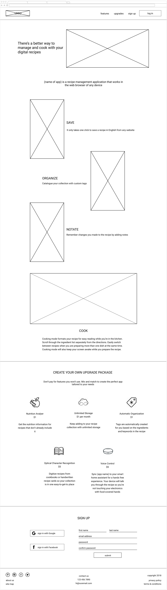
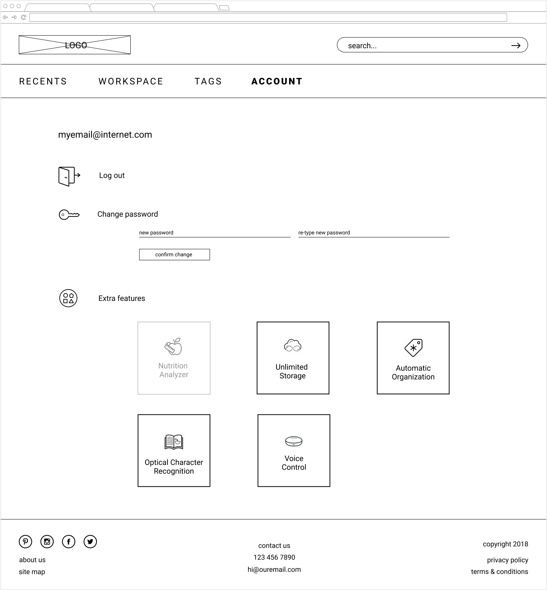

Chef’s Pal doesn’t just help you manage your recipe collection, it also makes following recipes in the kitchen easier
Role
UX Design, Branding
Tools
Figma, inVision, Draw.io
UX Design, Branding
Figma, inVision, Draw.io
Organizing a recipe collection, and maintaining that organization, is a daunting task to most. Manually inputting recipes and creating labels can be time consuming. Following a recipe from a website also has its struggles as you constantly scroll up and down between the ingredients and directions. Web pages reload after they have been idle for too long and you have to scroll through the blog post to find the actual recipe and your place again. Not to mention all this scrolling happens with messy hands.
Chef’s Pal is a responsive web application focused on the essentials of managing digital recipes, as well as cooking with them in the kitchen. This application offers access to technology that will digitize handwritten recipes from Great-Grandma Agnes and that will automatically organize content based on the metadata and ingredient list of the recipe. Following a recipe becomes easier when you only have the ingredients and preparation on the screen, can scroll through each section separately, and your screen stays awake the whole prep and cook time. Messy hands and electronics are no longer an issue when your home assistant can read each step to you.
My starting hypothesis was rather broad: at-home cooks struggle with recipe management.
I conducted a survey with people who cook from recipes at home and held follow-up interviews to evaluate this hypothesis and to try understand how people interact with their recipe collections.
The answers did not show any trends in interactions and it started to become apparent that current issues mainly lie in cooking with digital recipes.
Results placed an emphasis on “no frills cooking” and the frustration of using devices with food-covered hands.
respondents who find their current management method sufficient
respondents who did not know recipe management applications exist
I prepared a SWOT analysis of OrganizEat, ChefTap, and Paprika. I first observed the lengthy list of features these applications offered. In order to gain a better understanding of user sentiment towards all these features, I conducted an informal survey. I asked participants if they would use the feature, if they would pay for it, and how much would they pay for it.


Through my research it became very clear that people’s behavior with recipes varied greatly, much more than I had originally anticipated. I created three personas to reflect this spectrum.
“I like things simple; I don’t need all the bells and whistles.”
Goals:
“Using a computer or a phone in the kitchen is so different from what I’m used to.”
Goals:
“I’ll try anything, but I’m very particular about what I like.”
Goals:
I created user stories for new users, returning users, and all users. I focused on the shared needs of the personas first, then moved onto their specific goals. I also referenced the informal survey of features from my research to help determine the priority level of the user stories. I used all of the high and medium level user stories to create the MVP.
I focused on 5 main tasks for the user flows. I sketched them out by hand then refined them in Draw.io. I had a long battle with how users would interact with the “build-your-own upgrade” aspect of this product. It was clear in the user flow of editing features, shown here, that I was making the process more complicated than it needed to be. I should have re-evaluated this user flow; however, I let it be and struggled with the flow later in the process.
site map
I sketched out a few options for the mobile version of the recipe screen in a brainstorming session. I decided on a layout to build upon and sketched out the tablet and laptop/desktop versions, then moved onto the remainder of the screens. I created digital versions in Figma and added the content and icons I planned to include.
brainstorming sketches of mobile recipe screens
responsive recipe screen sketches and refined desktop recipe screen

I did informal testing on a few wireframes to determine if the text on the landing page painted a clear picture of the application, if the on boarding process made sense, and if the format of the additional upgrades for an existing user was understandable. The major update from the results was to streamline the onboarding process by offering a free trial for all upgrades opposed to having the user select which ones to try.
desktop landing page
desktop account screen
two mobile onboarding screens
I used three words to help guide the brand identity of Chef’s Pal: Clear, Fresh, and Supportive. Users should feel at-ease, focused, and assisted. I chose colors that evoked calmness, productivity, freshness, as well as an accent color that invigorated the palate.
There were two directions the logo was headed, one that used a chef’s hat and coat, the other used an apron. I created a preference test to see which logo spoke more to users. In the end, I chose the apron logo because because it is more relatable to home cooks than a professional chef’s attire. This logo was also more flexible in terms of scalability, orientation, and color usage.
logo branding sketches
preference test logos
logos
colors

I applied the brand guidelines to my wireframes to create high fidelity mockups.
I struggled with the landing/marketing page. I needed to find a balance of being informative and engaging. My original plan included separate animations showcasing each free feature, but chose illustrations for the first iteration of visual design. In the end, I condensed the illustrations and added a video that demonstrates all free features. I kept the message the same, just with a more inviting and relatable look.
Additionally, I needed to refine and soften the rest of my initial designs to make them feel less like a wireframe, to address dead space, and to revisit color decisions.
first and last iteration of visual design for the landing page


After adding the visual design I used InVision to create a clickable prototype to test. Since Chef’s Pal is a responsive web application, I created mobile and desktop prototypes. In the beginning of the testing I asked how the testers viewed recipes in the kitchen, which determined the version of the prototype they would test.
view desktop prototype view mobile prototypeThe major change after testing was made to Account and Available Upgrades. Needing the user to scroll horizontally to see the full menu list in the mobile version was not intuitive. I reworked how the account menu was presented, which in turn made me rework how the available upgrades were presented.
There was some confusion in figuring out how to proceed with payment when purchasing an upgrade. Components that were not a button looked like one and action items got lost on the screen. To address the problem, I decreased the number of steps in the flow and added more consistency to buttons and actions.
first and last iteration of account

testing prototype and revision of purchasing an upgrade

The Workspace’s function was not clear to all testers. From this feedback I used the header “Work” instead of “Cook” on the landing page to help users make the connection. I also created a tutorial for the full application. In the end I felt users would have a better understanding of the application if they were able to perform tasks themselves, not just view a tutorial or video. I decided to give all users one recipe in their collection when they signed up so they could fully engage in the application with little setup on their part.
new user starter recipe
Additionally, testers appreciated that a credit card was not required to sign up for the free trial, but would have liked to know that earlier in the sign up process. Not taking a credit card number promotes a relationship of trust, and that we want to help our users and don’t just view them as dollar signs.
I updated the prototypes based off the testing results.
view desktop prototype view mobile prototype view mobile workspace prototypeThe biggest lesson of this project was to routinely refer to earlier phases of the process. It is so easy to get caught up in each step, but these steps wouldn’t be a part of the process if they weren’t integral to the outcome. For example, I had forgot to include the option to delete a recipe in my first prototype; however, it was in my user stories and sketches all along. Without reviewing this information, valuable insights caught earlier in the process can be lost.
I struggled with the balance of creating a prototype that was fully clickable versus one that only led testers through the list of tasks in my testing script. It is worth the additional time to link more areas of the prototype to better understand the thought process of the tester. I need to remember to take a look at the big picture and not only focus on the small interactions.
It is important to have many tools in my repertoire. I have only used InVision for my prototypes and could benefit from incorporating Maze to get additional analytics and from researching the strengths of other prototyping programs. Additionally, I need to utilize design programs to their fullest extent in order to be more efficient, like taking advantage of components in Figma to reduce time spent editing the same element on different screens.
I would like to create a prototype that also included the experience of saving a recipe with the web browser extension. Easily saving any recipe a user finds online is a main feature of this application.
The user testing focused on user flows and how tasks were completed. I would like to code a prototype that could be tested with a small group of users in a kitchen setting to evaluate the included features. I surveyed what features people think they would use, but often times how we think we would use something and how we actually use something can be different. I started coding this protoype and created the homepage, login modal, and recents page.
view rough coded prototype